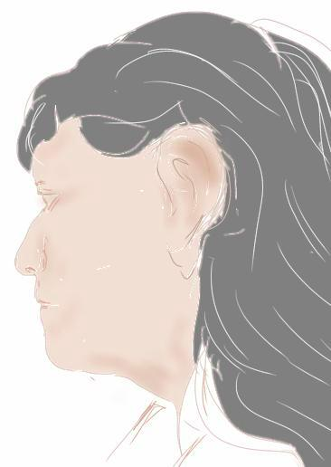

I was given a challenge, of documenting the number of days that we've been in lockdown in a piece of art. I decided to count them. And, being too lazy to write all the numbers down by hand, I wrote a bash script to draw them on a canvas, using imagemagick.
I kept working on the script over the next days, trying moving the numbers around in various ways, until I had them twirling around a small circle. Which takes trig functions, which are difficult to do in bash.

I started creating a new image every day, tweaking the positioning, until I finally took the plunge and ported the script to perl. Using Time::Local to automagicly compute the number of days since March 13, and Image::Magick to create the image. And then added randomization for positioning and rotation.

And for the color. Using hsl (hue, saturation, lightness). I started out with a random hue, with full saturation, starting out dark and lightening a bit for each day. And shifting the hue a bit each day as well.

And then I randomized the font.

Changed the code to plot a parabola instead of an elipse. And then started randomizing the background color.


The only change I've made to the script in this time was to give it an override argument, so that I could backfill the images from the start of lockdown until I got my image-making the way I wanted it. I've been creating images on a daily basis through the winter. And as we're coming up on a full year, they're getting pretty dense with writing.

The next step was to take the images that I'd created and assemble them into other images, in grids that imagemagick calls montages. This evolved into three separate scripts, in perl and bash. One takes each of the daily number images and slices and dices it into a plethora of small tiles. And also calculates each tile's mean (its lightness or darkness) and stores that away in a file. The second courses over a reference photo in a grid, calculating the mean of each rectangle and storing that away in another file. And the third reads both of those files, picks out the tile that best matches each rectangle of the reference photo, and calls imagemagick to assemble those tiles into a new image.
When it was all working, these reference photos:
|  |
|---|
turned into these images:

|

|
|---|
The next step was to change the first two scripts to calculate and store the rgb values of the average hues of the tiles and rectangles. And the third script to find the tile that best matched the color of the reference photo. When that was working the results were:

|

|
|---|
I've left off doing my own face after this. I've continued to create other montages though, mostly of pets and foster critters.
{kind=link}
{kind=link}